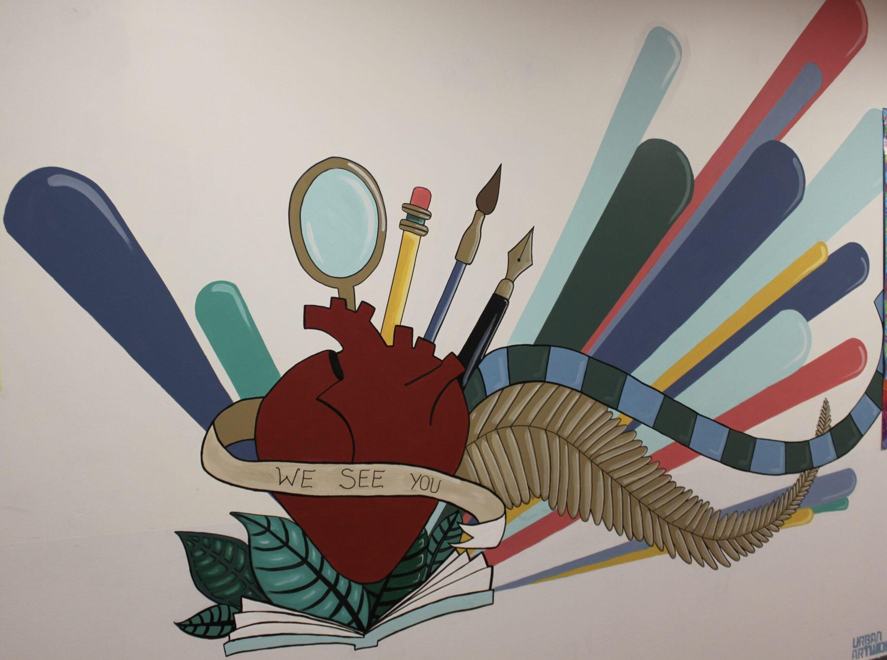
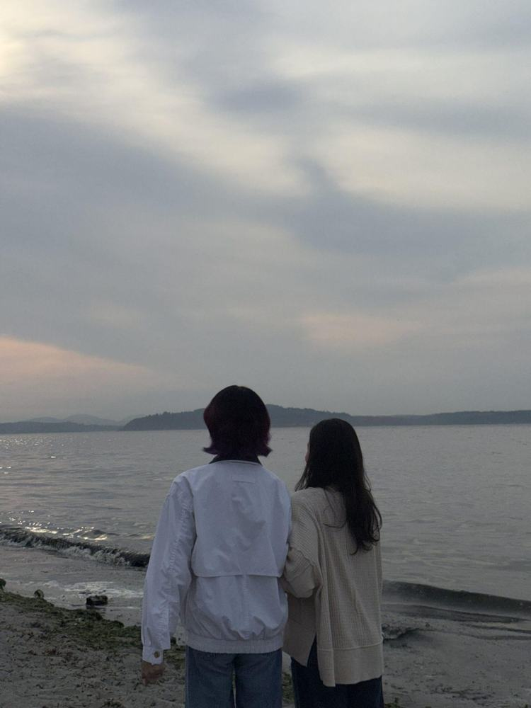

Stories & Community Impact
Behind every metric is an extraordinary individual journey. Meet the students, caregivers, and community mentors flourishing through Kandelia's programs.
Roots & Routes Stories
Click on any story card to read the full first-person narrative in detail.

Patrick's Story
"Kandelia showed me that being an immigrant isn't a deficit—it's a reservoir of resilience."
How a quiet high school newcomer found mentorship, graduated with honors, and returned to inspire the next generation of refugee youth.

Sunflower & Tulip's Story
"Together, with Kandelia beside us, we felt like we could climb any mountain."
Two sisters navigating high school in a new country, supporting each other and building community leadership through youth programs.

A Mother's Story
"They didn't just give me resources; they gave me back my confidence as a parent."
A brave mother's journey from displacement to becoming an active digital leader, community volunteer, and school advocate.

Vidia's Story
"When someone believes in your potential before you can even speak the language, you can achieve the impossible."
How English classes and career coaching helped Vidia transition from an isolated newcomer to a certified public health worker.
Voices of Trust & Gratitude
What students, parents, school counselors, and community leaders say about Kandelia.
2026 Community Impact Report
Transparent outcomes from our student graduation cohorts, emergency family fund, and adult digital literacy classes.
Deep Roots, Lasting Flourish
Explore our comprehensive evaluation of student graduation rates, family economic mobility, and direct assistance distribution across King County.
- 570+ Newcomers guided through academic and civic pathways
- 95% Graduation Rate among cohort high school seniors
- $240,000+ Distributed in direct emergency family relief & rental aid
- 1,200+ Hours of bilingual adult digital literacy training delivered